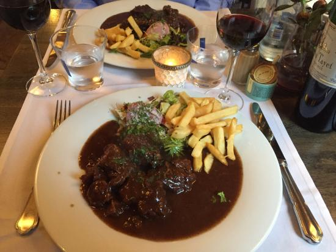

Lille is the capital of the Hauts-de-France region in northern France, near the border with Belgium. A cultural hub and bustling university city today, it was once an important merchant center of French Flanders, and many Flemish influences remain. The historic center, Vieux Lille, is characterized by 17th-century brick town houses, cobbled pedestrian streets and the large central square, Grand Place.
Flemish Stew

Ingredients
For the Flemish Stew
1. Beef Stew Meat
2. All-Purpose Flour
3. Salt
4. Black Pepper
5. Canola Oil
6. Unsalted Butter
7. Yellow Onions
8. Clove Garlic
9. Brown Sugar
10. Dried Parsley
11. Bay Leaf
12. Dried Thyme
13. Bottle Dark Beer
14. Beef Stock
15. Apple Cider Vinegar
METHOD OF PREPERATION
STEP 1 Gather the ingredients.
STEP 2 In a large bowl, toss together the beef, flour, salt, and pepper.
STEP 3 Heat the canola oil and butter in a large, roomy pan and brown the beef in it on all sides in batches. If you add all the beef at once it will lower the temperature too much and the meat will boil rather than sear. Carefully watch the beef to make sure it doesn’t burn though, but give it enough time to develop a nice, rich brown color–the caramelized sugars will greatly enhance the stew’s flavor.
STEP 4 Place all the beef back in the pan once browned and add the onions, garlic, brown sugar, parsley, bay leaf, and thyme and stir thoroughly. The onions will pick up a bit of the browned bits in the bottom of the pan.
STEP 5 Raise the heat under the pan and stir in the beer and add enough beef stock to cover the beef in the pan. Bring to a boil, then cover the pan, reduce the heat to low, and simmer for 1 1/2 hours or until the beef is tender. Keep checking to make sure the beef is simmering and not boiling dry. If it seems a little dry, add a touch more stock. The liquid in the pan also should be thickening slightly.
STEP 6 Remove the pan from the heat and stir in the apple cider vinegar. Let the stew stand for 10 minutes before serving. Portion into heated bowls with the potatoes and salad on the side.
Note: If you are able to make this stew a day or two in advance, you will find it is even better. And, if this dish is not already magnificent, it freezes beautifully, so make a large batch and store it in the freezer. It will keep well for up to six months. Defrost thoroughly before reheating.
BEST RESTAURANTS FOR FLEMISH STEW IN LILLE CITY
Pureté Located in the heart of old Lille, Pureté, led by Chef Gérald Guille, offers a modern and emotional culinary experience. The 'pure' materials like concrete, wood, and leather, give the space a tranquil and refined atmosphere, mirroring the chef's creative and uninhibited culinary style, rich in personality and flavors.
Le Palais de la Biere Located opposite the Lille Flandres train station and a few minutes from the city center, Le Palais de la Biere offers you a wide range of beers: draft beer (Grimbergen range in particular), but also numerous bottled beers to discover and taste . Open from 6 a.m. to midnight, Le Palais de la Biere also welcomes you for meals (possibility of privatizing the glass roof for groups). The chef offers you various hamburgers and pizzas made on site, grills, salads, and of course some regional dishes like Welsch or carbonnade. Our team will welcome you with a smile and will be able to guide you in your choices.